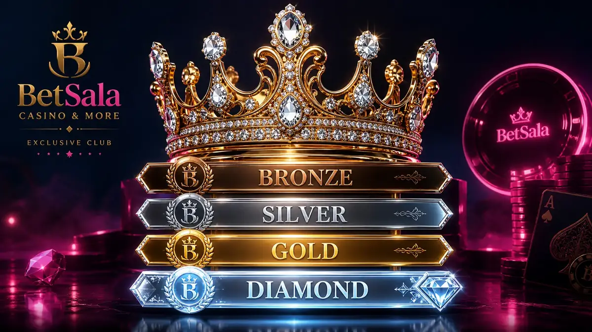

Niveles
Un sistema de progreso puede desbloquear trato diferenciado según actividad de cuenta.
El programa VIP de BetSala 11 entrega beneficios reales — cashback, bonos exclusivos, atención prioritaria — pero también puede incentivar a jugar más de lo planificado. Esta sección separa las ventajas de los riesgos.

Beneficios posibles para usuarios frecuentes
Un sistema de progreso puede desbloquear trato diferenciado según actividad de cuenta.
Retorno parcial de pérdidas con condiciones, límite y periodo definido.
Soporte prioritario o gestor, según nivel y disponibilidad.
Ver másPromociones personalizadas para casino, deportes o fechas concretas.
Ver másEl programa VIP solo tiene sentido si el usuario mantiene control del presupuesto. Subir apuestas para avanzar de nivel suele ser una mala decisión, incluso si hay cashback u ofertas extra.
Lee siempre cómo se calcula el nivel, qué actividad cuenta y si existen condiciones para retirar beneficios.
Seguridad
BetSala VIP puede combinar beneficios de casino y deportes, pero las reglas no siempre son iguales. Un cashback de casino, una apuesta gratis y un bono de slots pueden tener requisitos independientes.
Para Chile, también conviene revisar si atención prioritaria incluye métodos de pago locales o solo consultas generales de cuenta.
Apuestas
Un beneficio VIP es útil solo si mejora tu experiencia sin empujarte a gastar más de lo previsto.

Una posible área de beneficios para usuarios frecuentes, con niveles, cashback u ofertas.
No. Ningún programa elimina el riesgo del juego con dinero real.
Depende de reglas internas. Revisa actividad válida, periodo y condiciones.
Puede cubrir ambos, pero cada beneficio debe leerse por separado.